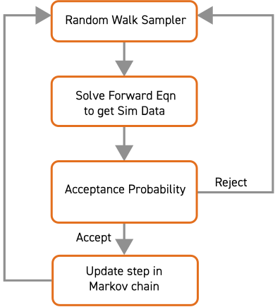

Computationally efficient methods for uncertainty quantification in seismic inversion

Georgia K. Stuart
The Department of Mathematical SciencesThe University of Texas at Dallas
28 September 2020
Outline

Exploration Seismology
Wave Data

Full Waveform Inversion (FWI)
Uncertainty Quantification and FWI


Bayes' Rule


Markov chain Monte Carlo (MCMC)
Markov chain Monte Carlo (MCMC)

The Problem with MCMC
How can we reduce the computational cost of MCMC methods for FWI?
Strategies
Two-Stage MCMC
Choice of Filters
Operator Upscaling
- Modeling wave propagation can be computationally expensive.
- We use the 2D constant-density acoustic wave equation \[\frac{1}{c^2(x,z)}\frac{\partial^2 p}{\partial t^2} - \nabla p = f\]
- Operator upscaling1 decomposes the solution into
two parts:
- Fine grid problem on independent subdomains
- Small coarse grid problem over the whole domain
- In this upscaling technique we do NOT upscale the model.
(1) Vdovina et al. (2005), Korostyshevskaya and Minkoff (2006), Vdovina and Minkoff (2008)
Operator Upscaling
- Write the acoustic wave equation as a system in space by introducing acceleration, \(\vec{v}\) \[\begin{align} \vec{v} &= - \nabla p \\ \frac{1}{c^2} \frac{\partial^2p}{\partial t^2}&= - \nabla \cdot \vec{v} + f \end{align}\]
- Solve in parallel for fine grid pressure and acceleration over each independent coarse block. No communication is required at this stage.
- Solve for coarse grid acceleration over the whole domain.
Numerical Experiment: Two-stage MCMC with Upscaling
Numerical Experiment: Two-stage MCMC with Upscaling

Numerical Experiment: Two-stage MCMC with Upscaling
Neural Network Filter
Numerical Experiment: Two-stage MCMC with Neural Net
Numerical Experiment: Two-stage MCMC with Neural Net
The random walk sampler practically limits the number of unknowns we can use
Trouble: The Random Walk Sampler
- In theory, MCMC will converge to the target distribution.
- In practice, methods based on random walk sampling (RWS) can handle a limited number of unknowns (\(<100\) in our experience)
- RWS produces samples that are highly correlated.
Hamiltonian Monte Carlo (HMC)
Hamilton's Equations
HMC Flowchart
Problem: Gradient Computation is Expensive!
Two-Stage Hamiltonian Monte Carlo
Neural Network-Enhanced Two-Stage HMC (NNHMC)
Numerical Experiments: NNHMC
Numerical Experiments: NNHMC
Numerical Experiments: NNHMC
HMC requires user-specified parameters to discretize the hamiltonian dynamics
The No-U-Turn Sampler (NUTS)
The No-U-Turn Sampler
Numerical Experiment: NUTS
Numerical Experiment: NUTS

Vertical slices with HPD intervals
Numerical Experiment: NUTS

Posterior Distributions